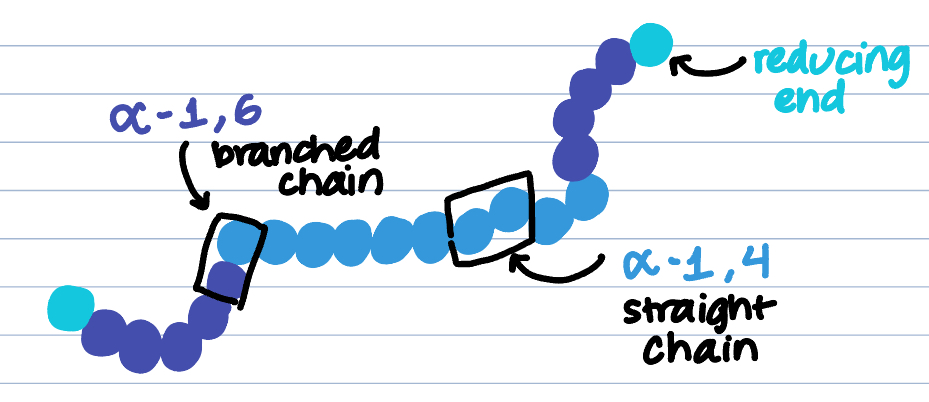
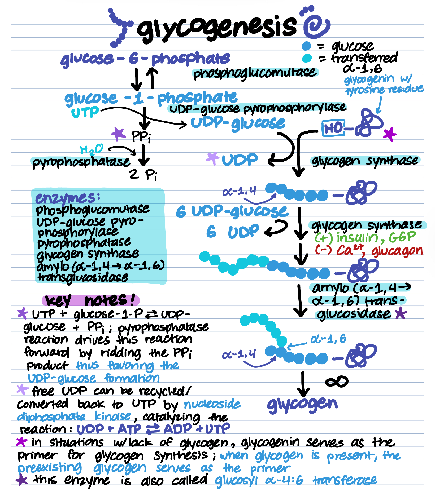
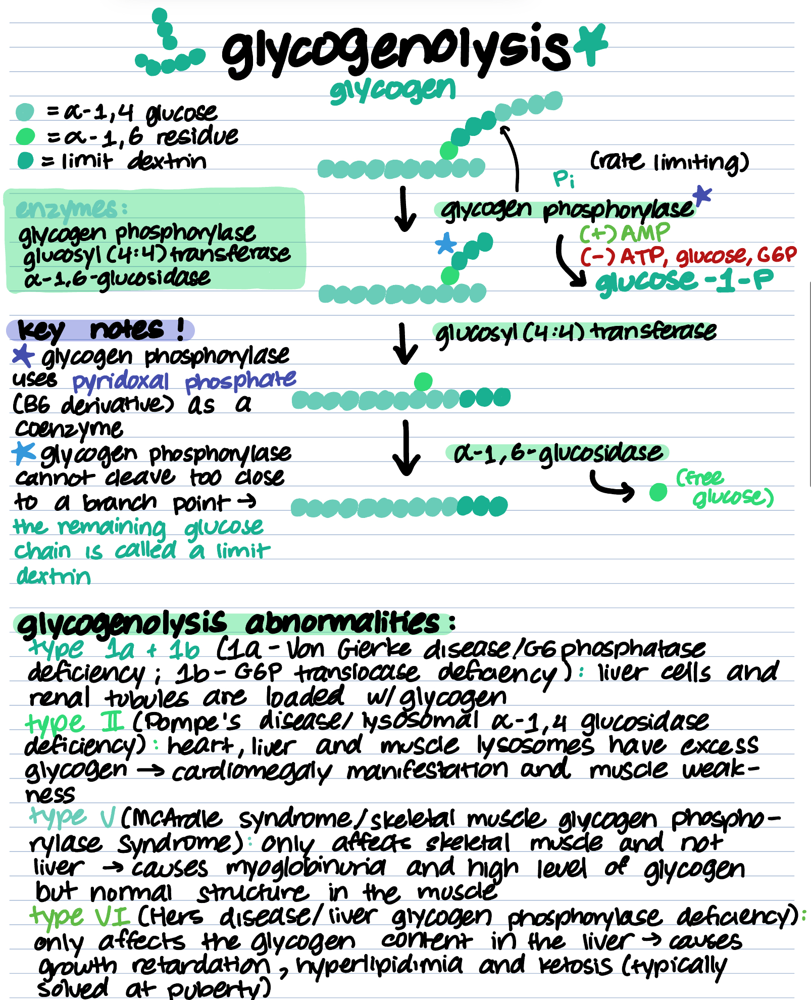

5th Path: Glycogen Metabolism
Let's switch gears from glucose and talk about glycogen metabolism! Glycogenesis and glycogenolysis are processes that create and break down glycogen, respectively. Similar to glycolysis and gluconeogenesis, they are reverses of each other by definition. Let's find out what glycogen is, and how it's made.
What is glycogen?
Glycogen is pretty much a series of long chains of glucose molecules with branches, predominated by α-1,4 glycosidic linkages, and α-1,6 glycosidic linkages at every 8-10 glucose residues. Remember your organic chemistry! The anomeric carbon, or the carbon that is not attached to another glucose residue, has a reducing end, and is attached to a protein called glycogenin. Take a look at the structure below to better understand glycogen. Keep in mind that each dot represents a glucose residue.

What is Glycogenesis?
In simple terms, its the creation ofglycogen from glucose. A primer initiates the process, which can either be a preexisting glycogen molecule or, if glycogen is low or depleted, the protein glycogenin. The main enzyme is glycogen synthase.
What is Glycogenolysis?
Lysis always means breakdown. Glycogenolysis is the breakdown of glycogen into free glucose molecules. Itshortens glycogen chains and debranches alpha-1,6 glycosidic bonds. The main enzyme is glycogen phosphorylase.
The big picture: Glycogenesis creates glycogen from free glucose, which occurs in the fed state. Glycogenolysis breaks down glycogen, freeing glucose molecules, which occurs in the fasting state.
Let’s Talk Activators and Inhibitors (Regulation)!
Since the processes are opposites, glycogenolysis and glycogenesis are reverse regulated. The processes are regulated by controlling the main enzymes of each process, glycogen synthase (for glycogenesis), and glycogen phosphorylase (for glycogenolysis). Let's take a look at some of the enzymes in both processes, with their activators and inhibitors.
| Enzyme | Process | Activator | Inhibitor |
|---|---|---|---|
| Glycogen synthase | Glycogenesis | insulin, glucose-6-phosphate | Ca2+ in muscle cells, glucagon/epinephrine (leading to inhibition with protein kinase A or protein kinase C) |
| Glycogen phosphorylase | Glycogenolysis | glucagon/epinephrine (leading to activation by protein kinase A and calmodulin), Ca2+ and AMP (low ATP levels) in muscle cells | glucose-6-phosphate, ATP, glucose, insulin |
Glycogen Metabolism Full Diagrams
Check out these diagrams, outlining the full picture of the pathways.

